Uma identidade em pixels
Pequenos pixels.
Grandes saltos.
Personagens expressivos, cenários com profundidade e uma linguagem visual compartilhada do primeiro salto à última tela.
Super Feka Gaps · Remaster

O golpe de Joãozão organiza a cena: a fenda conduz o olhar, Feka escapa e o minion reage à borda quebrada. Desenho a tinta, título geométrico e faixas integradas à moldura exploram a linguagem das capas dos anos 70/80. Baixar PNG · Direção de arte, referências e prompt
O jogo, antes e agora
Arraste a divisão para comparar as capturas. Os cenários usam as fases do jogo; a câmera foi posicionada para revisão da arte.
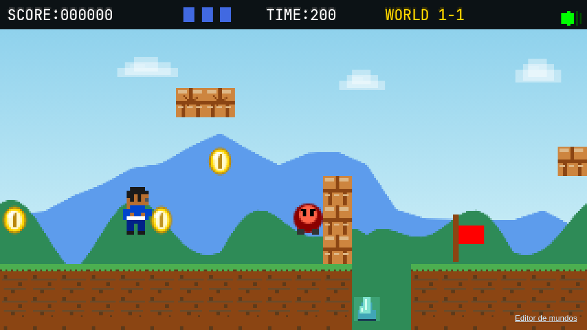
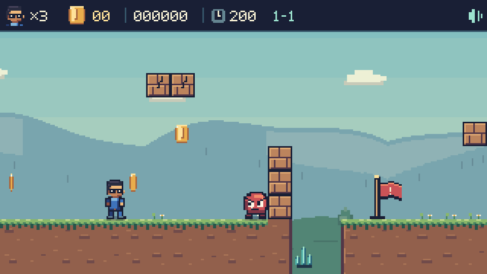
ANTERIORIMPLEMENTADOAs poses e fases das animações podem diferir entre as duas capturas. As imagens novas são saídas do renderizador, sem retoques.
Uma família de personagens
Silhuetas legíveis, contorno índigo e paletas distintas. As poses de ação e os acessórios seguem a mesma escala dos cenários.
Movimento na grade nativa
Caminhada em seis poses para Feka, passos dos minions, poses do chefe e animação de Yasmin. Esta prévia usa os frames exportados do jogo.
Baixar atlas PNG · Coordenadas JSON
Cenários, objetos e interface

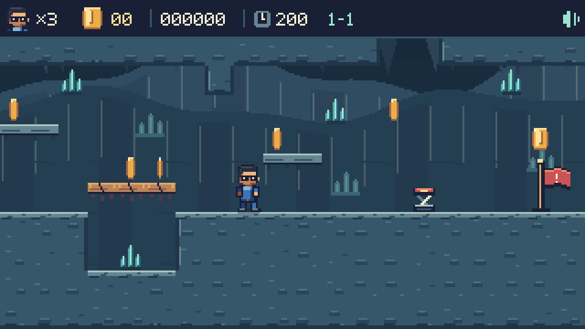
Rochas distantes discretas, cristais turquesa e bordas claras nas plataformas.

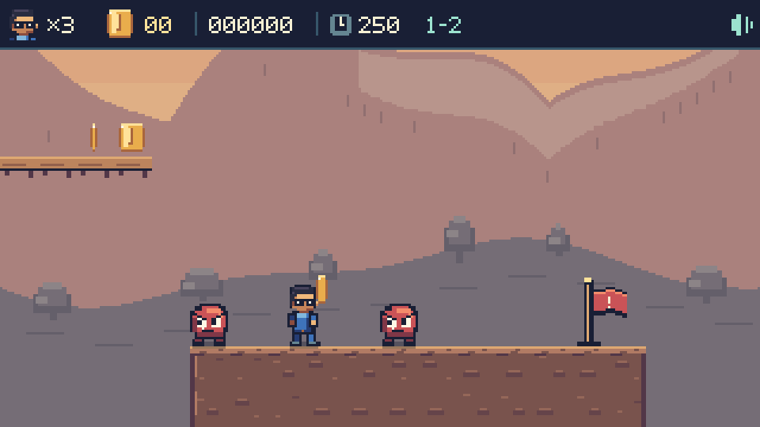
O vale tem luz de fim de tarde, terra quente e montanhas dessaturadas.

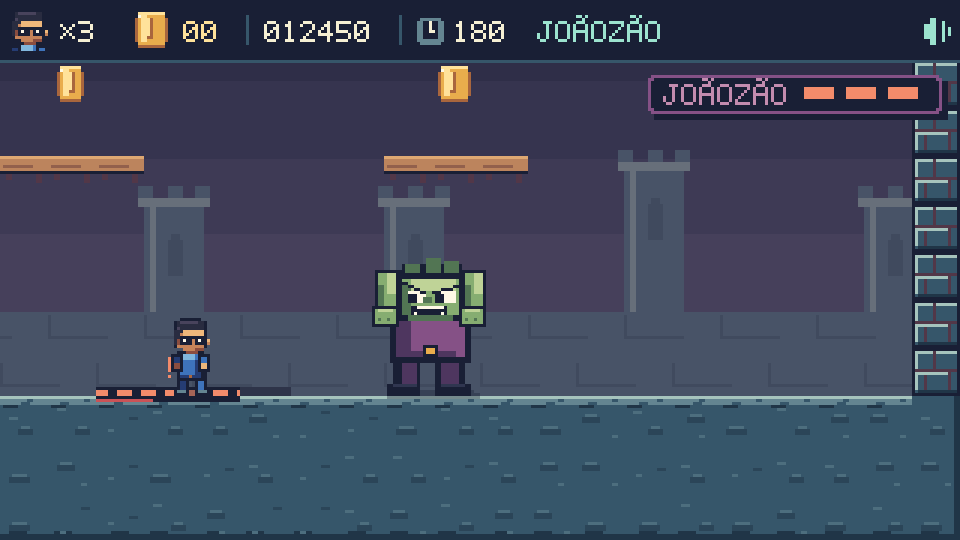
O golpe marca três tiles, fixa o alvo e abre o buraco nesse ponto. Acertar o chefe interrompe a preparação.

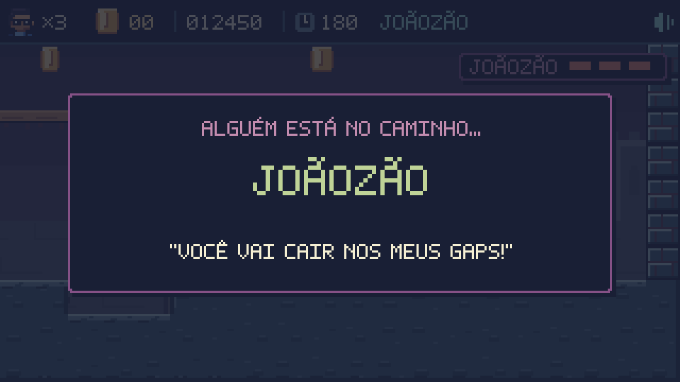
“Você vai cair nos meus gaps!” retorna à entrada do Joãozão, com tipografia bitmap e acentos.

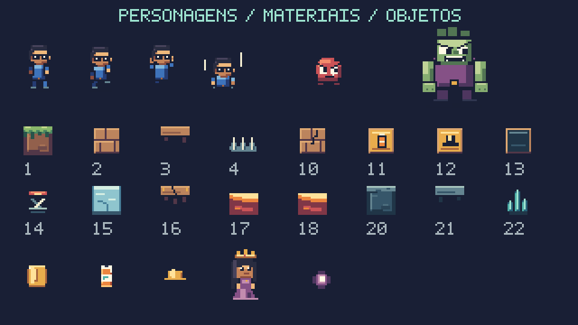
Pedra, madeira, gelo, lava, tijolos quebráveis, molas, capacete e lata compartilham as regras de luz e pixel.

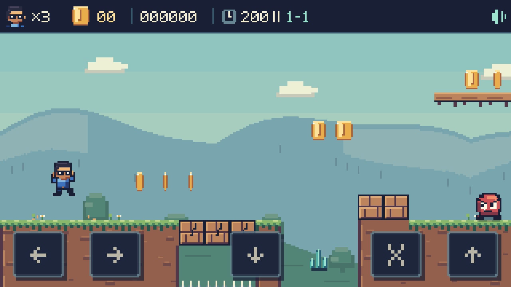
Botão central para o golpe no ar, menus acionáveis por toque e pausa no topo.

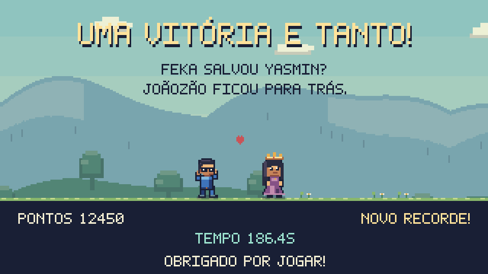
Feka e Yasmin juntos no cenário, com resultados e recordes no mesmo sistema visual.

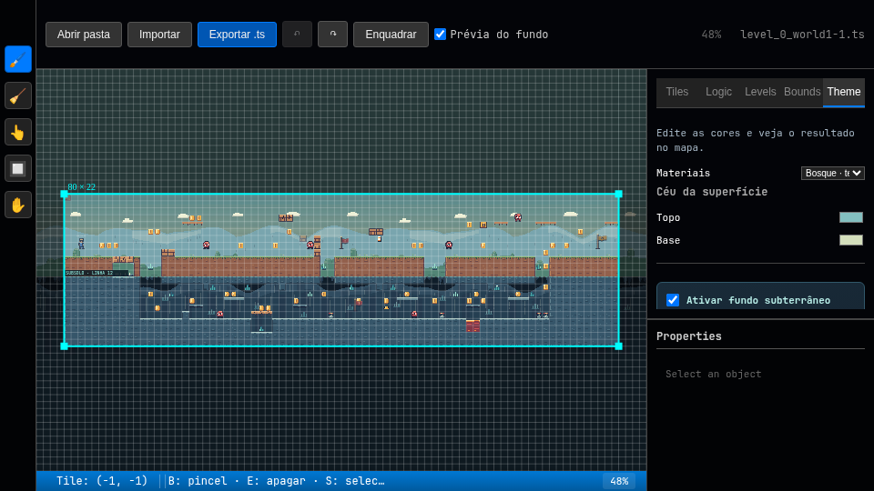
Prévia dos materiais, sprites e fundos com importação, exportação e histórico preservados.
Atlas na resolução original
42 entradas com transparência. O código dos sprites é a fonte de produção; este PNG permite examinar e reutilizar os frames exportados.
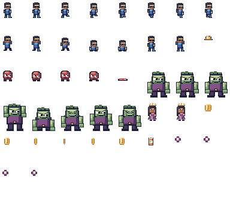